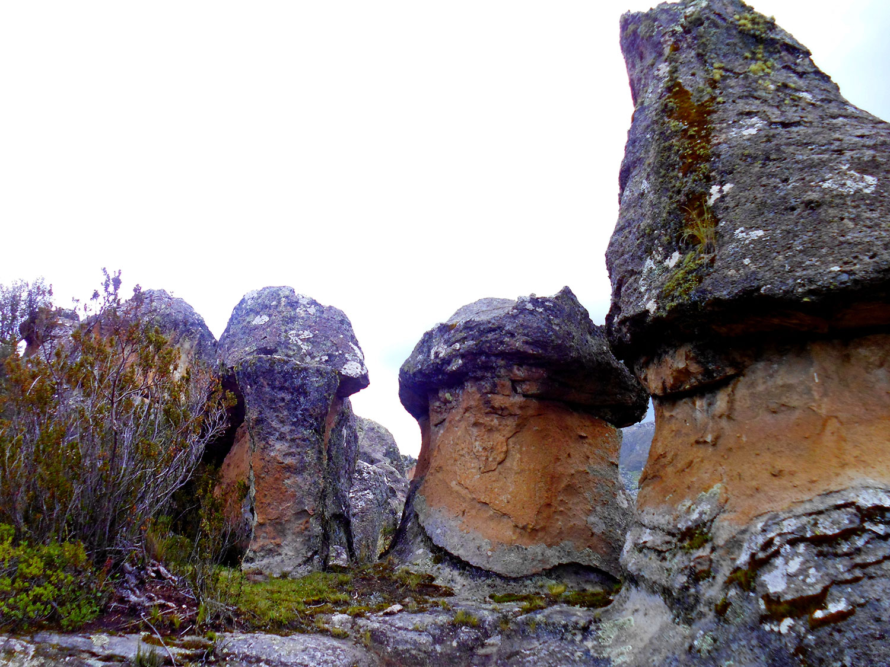

Lugares para visitar en Ayacucho
Bosque de piedras. 
En los terrenos de una antigua hacienda ganadera se levanta el bosque de piedras de Huaraca, una antiquísima formación geológica de inmensas rocas que han tomado distintas formas y que dominan el místico y silencioso paisaje andino.
Aguas Turquesas.
Las Aguas Turquesas de Millpu son un apetecido destino turístico que oculta uno de los paisajes más grandiosos de Ayacucho y el Perú. Lee a continuación para enterarte de toda la información que necesitas para viajar y disfrutar de estas magníficas piscinas naturales.
Baños del Inca

Está situada a una altitud de 3.490 msnm en la vertiente oriental de la Cordillera de los Andes y se encuentra a 2 horas y media de Huamanga por una vía 100% asfaltada.
Cangallo
El combate de Cangallo fue un enfrentamiento militar librado en diciembre de 1820 durante la Independencia de Perú, entre las fuerzas del Ejército Real del Perú y las montoneras partidarias de la Expedición Libertadora del Perú, con victoria de las primeras.
Cañones de Qorihuillca

Dentro del centro Poblado de Qorihuillca se encuentras estas gritas que se conocen como Los 7 Cañones de Qorihuillca, ideal para amantes del turismo no convencional practicando la aventura y trekking 100% full adrenalina.
Catarata sirenachayoc
Este día podrás caminar por una comunidad local y típica de los Andes. También verás la casa Hacienda, que data del siglo XVII, y está en restauración. Para finalmente llegar a una hermosa cascada.
Cuevas de Pikimachai
La Cueva de Pikimachay tiene aproximadamente 24 m de ancho y 12 m de alto y se encuentra en el centro del cerro Allqowilka. Se han encontrado instrumentos líticos del paleolítico andino, y restos óseos de animales hoy extintos, cuya antigüedad data de 20.000 a 15.000 años a. c.
Huatuscalla

El cañón de Huatuscalle es atracción principal de esta zona, Por contar con el pico de mayor altitud de Luricocha que permiten los valles, Cuencas y quebradas se forman verdaderas obras de arte que invitan de al solaz, a la tranquilidad y por supuesto a la práctica del ecoturismo.
Panpas Galeras
La reserva nacional Pampa Galeras-Bárbara es un área protegida peruana ubicada en la zona altoandina de Lucanas, departamento de Ayacucho, Perú. El área está principal dedicado como centro de recuperación y conservación de la vicuña.
Bosque de Pullas

La Puya raimondii Harms es endémica de los Andes de Perú y Bolivia, forma poblaciones conocidas como rodales, distribuidas entre los 3500 y 4800 m de altitud, teniendo preferencia por terrenos rocosos con pendientes moderadas a muy fuertes.
Sarhua
Sarhua, es un distrito de la Provincia de Fajardo Ayacucho, en su jurisdicción encontramos las bellas cascadas de campanayuq o cascadas de Sarhua, esta a 4 horas aproximadamente de la ciudad de Huamanga.
Laguna Esmeralda
Un nuevo atractivo eco turístico en Ayacucho esta dando mucho que hablar, se trata de la Laguna Esmeralda o Verdeccocha que se encuentra en la comunidad de Uchuraccay que pertenece a la Provincia de Huanta.
Volcan Pachapupum

El Volcan de Pachapupum se encuentra en la Provincia de HuancaSancos, ubicado a una altitud de 4,022 m.s.n.m en el Distrito de Sacsamarca.Es un monumento petreo natural formado por la caída de componentes de sal y azufre en forma de cono. Tiene una altura aproximada de 30mts.